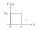

Betrachte ein Teilchen, das von $-\infty$ nach $+\infty$ bewegt und auf das
Potential
$$V(q) =
\begin{cases}
0, & q < 0 \\
V_0, & 0\leq q \leq a \\
0, & q > a
\end{cases}$$

trifft.
Gesucht sind die Transmissionswahrscheinlichkeit $T(E)$ und die Reflexionswahrscheinlichkeit
R(E) des Teilchens an der Potentialbarriere.
Fall: $E > V_0$
Die zeitunabh. Schrödinger-Gleichung wird für jeden Abschnitt (I, II, III) gelöst.
Die Lösungen für Bereiche I und III sind dieselben wie beim Kastenpotential
$$\phi_{I}(x) = Ae^{ikx} + Be^{-ikx},\quad \phi_{III}(x) = A''e^{ikx} + B''e^{-ikx}$$
Analog dazu ergibt sich auch die Lösung für Bereich II, nur diesmal mit Potential $V_0$
\begin{align*}
-\frac{\hbar^2}{2m}\frac{\text{d}^2\phi}{\text{d}q^2} + V_0\phi &= E\phi \\
\Leftrightarrow -\frac{\hbar^2}{2m}\frac{\text{d}^2\phi}{\text{d}q^2} - (E - V_0)\phi &= 0 \\
\Leftrightarrow \frac{\text{d}^2\phi}{\text{d}q^2} + \underbrace{\frac{2m(E - V_0)}{\hbar^2}}_{=:\varkappa^2}\phi &= 0
\end{align*}
Lösen der DGL
$$\phi'' + \varkappa^2\phi = 0$$
charakteristisches Polynom:
$$\begin{align*}
\lambda^2 + \varkappa^2 &= 0\\
\Leftrightarrow \lambda_{1,2} &= \sqrt{-\varkappa^2} \\
&= \sqrt{-\frac{2m(E - V_0)}{\hbar^2}}
\end{align*}$$
Da $E>V_0$ gilt, ergeben sich die imaginäre Eigenwerte
$$\lambda_{1,2} = \pm i\varkappa$$
Fundamentalsystem:
$$\varphi_1 = e^{i\varkappa x},\quad \varphi_2 = e^{-i\varkappa x}$$
allgemeine Lösung:
$$\phi_{II}(x) = A'e^{i\varkappa x} + B'e^{-i\varkappa x}$$
Da die Welle von links einläuft und die Welle sich hinter dem Potential (Bereich III)
ungestört ausbreitet, kann kein von rechts einlaufender Teil existieren: $B''e^{-ikx} = 0$.
Die Ortsfunktion ist somit
$$\phi(x) =
\begin{cases}
Ae^{ikx} + Be^{-ikx}, & \text{I} \\
A'e^{i\varkappa x} + B'e^{-i\varkappa x}, & \text{II} \\
A''e^{ikx}, & \text{III}
\end{cases}$$
Für die Normierbarkeit der Wellenfunktion ist die Stetigkeit an den Grenzübergängen
notwendig, d.h. Wert und Steigung der angrenzenden Bereichslösungen sind gleichzusetzen.
Dabei werden die Abkürzungen $r=B/A,\ t=A''/A,\ a' = A'/A,\ b'=B'/A$ genutzt.
\begin{align}
\phi_\text{I}(0) &= \phi_\text{II}(0) \\
\Rightarrow A + B &= A' + B'\\
\Leftrightarrow 1 + r &= a' + b' \tag{1} \\
\\
\phi'_\text{I}(0) &= \phi'_\text{II}(0) \\
\Rightarrow ikA - ikB &= i\varkappa A' - i\varkappa B' \\
\Leftrightarrow kA - kB &= \varkappa A' - \varkappa B' \\
\Leftrightarrow k - kr &= \varkappa a' - \varkappa b' \tag{2} \\
\\
\phi_\text{II}(a) &= \phi_\text{III}(a) \\
\Rightarrow A'e^{i\varkappa a} + B'e^{-i\varkappa a} &= A''e^{ika} \\
\Rightarrow a'e^{i\varkappa a} + b'e^{-i\varkappa a} &= te^{ika} \tag{3} \\
\\
\phi'_\text{II}(a) &= \phi'_\text{III}(a) \\
\Rightarrow i\varkappa A'e^{i\varkappa a} -i\varkappa B'e^{-i\varkappa a} &= ikA''e^{ika} \\
\Leftrightarrow \varkappa a'e^{i\varkappa a} - \varkappa b'e^{-i\varkappa a} &= kte^{ika} \tag{4} \\
\end{align}
Der interessierenden Größen sind die Transmissionswahrscheinlichkeit
$$T(E) = |t|^2 = t^* t$$
und die Reflexionswahrscheinlichkeit
$$R(E) = |r|^2 = r^* r$$
...
Fall: $E < V_0$
Die Lösungen für die Bereiche I und III bleiben unverändert.
Beim Lösen der DGL im Bereich II entsteht jedoch ein anderes Ergebnis.
Lösen der DGL
$$\phi'' + \varkappa^2\phi = 0$$
charakteristisches Polynom:
$$\begin{align*}
\lambda^2 + \varkappa^2 &= 0\\
\Leftrightarrow \lambda_{1,2} &= \sqrt{-\varkappa^2} \\
&= \sqrt{-\frac{2m(E - V_0)}{\hbar^2}}
\end{align*}$$
Da $E < V_0$ gilt, ergeben sich die reellen Eigenwerte
$$\lambda_{1,2} = \pm \varkappa$$
Fundamentalsystem:
$$\varphi_1 = e^{\varkappa x},\quad \varphi_2 = e^{-\varkappa x}$$
allgemeine Lösung:
$$\phi_{II}(x) = A'e^{\varkappa x} + B'e^{-\varkappa x}$$
Die Ortsfunktion ist somit
$$\phi(x) =
\begin{cases}
Ae^{ikx} + Be^{-ikx}, & \text{I} \\
A'e^{\varkappa x} + B'e^{-\varkappa x}, & \text{II} \\
A''e^{ikx}, & \text{III}
\end{cases}$$
Die Stetigkeitsbedingungen ergeben sich analog zum ersten Fall
\begin{align*}
1 + r &= a' + b' \tag{5}\\
ik - ikr &= \varkappa a' - \varkappa b' \tag{6}\\
a' e^{\varkappa a} + b' e^{-\varkappa a} &= t e^{ika} \tag{7}\\
\varkappa a' e^{\varkappa a} - \varkappa b' e^{-\varkappa a} &= ikt e^{ika} \tag{8}
\end{align*}
Lösen des linearen Gleichungssystems nach $t$
Ausdruck für $a'$ finden
$\varkappa\cdot(7) + (8)$:
\begin{align*}
\varkappa a'e^{\varkappa a} \color{red}{+ \varkappa b'e^{-\varkappa a}} + \varkappa a'e^{\varkappa a} \color{red}{- \varkappa b'e^{-\varkappa a}} &= \varkappa te^{ika} + ikte^{ika} \\
2\varkappa a'e^{\varkappa a} &= (\varkappa + ik)te^{ika} \\
\Leftrightarrow a' &= \frac{(\varkappa + ik)t}{2\varkappa e^{\varkappa a}} e^{ika} \\
&= \frac{(\varkappa + ik)t}{2\varkappa} e^{(ik - \varkappa)a}
\end{align*}
Ausdruck für $b'$ finden
$\varkappa\cdot(7) - (8)$:
\begin{align*}
\color{red}{\varkappa a'e^{\varkappa a}} + \varkappa b'e^{-\varkappa a} \color{red}{- \varkappa a'e^{\varkappa a}} + \varkappa b'e^{-\varkappa a} &= \varkappa te^{ika} - ikte^{ika} \\
2\varkappa b'e^{-\varkappa a} &= (\varkappa - ik)te^{ika} \\
\Leftrightarrow b' &= \frac{(\varkappa - ik)t}{2\varkappa} e^{ika}e^{\varkappa a} \\
&= \frac{(\varkappa - ik)t}{2\varkappa} e^{(ik + \varkappa)a}
\end{align*}
$a'$ und $b'$ einsetzen und Ausdruck für $t$ finden
$ik\cdot(5) + (6)$:
\begin{align*}
ik \color{red}{- ikr} + ik + ikr &= ika' + ikb' + \varkappa a' - \varkappa b' \\
2ik &= (ik + \varkappa) a' + (ik - \varkappa)b' \\
2ik &= (ik + \varkappa) \frac{(\varkappa + ik)t}{2\varkappa} e^{(ik - \varkappa)a} + (ik - \varkappa) \frac{(\varkappa - ik)t}{2\varkappa} e^{(ik + \varkappa)a} \\
2ik &= \Big[(ik + \varkappa)^2 e^{-\varkappa a} - (ik - \varkappa)^2 e^{\varkappa a} \Big]\frac{t}{2\varkappa} e^{ika} \\
2ik &= \Big[(-k^2 + 2ik\varkappa + \varkappa^2) e^{-\varkappa a} - (-k^2 - 2ik\varkappa + \varkappa^2) e^{\varkappa a} \Big]\frac{t}{2\varkappa} e^{ika} \\
2ik &= \Big[ 2ik\varkappa (e^{-\varkappa a} + e^{\varkappa a}) + (k^2 - \varkappa^2)(e^{-\varkappa a} + e^{\varkappa a}) \Big]\frac{t}{2\varkappa} e^{ika} \\
2ik &= \Big[ 2ik\varkappa\cdot 2\cosh(\varkappa a) + (k^2 - \varkappa^2)\cdot 2\sinh(\varkappa a) \Big]\frac{t}{2\varkappa} e^{ika} \\
\Leftrightarrow t &= \frac{4ik\varkappa e^{-ika}}{2(k^2 - \varkappa^2)\sinh(\varkappa a) + 4ik\varkappa\cosh(\varkappa a)}
\end{align*}
Die Transmissionswahrscheinlichkeit ist dann
\begin{align*}
T &= |t|^2 \\
&= t^*\cdot t \\
&= \frac{-4ik\varkappa \color{red}{e^{ika}}}{2(k^2 - \varkappa^2)\sinh(\varkappa a) - 4ik\varkappa\cosh(\varkappa a)} \cdot \frac{4ik\varkappa \color{red}{e^{-ika}}}{2(k^2 - \varkappa^2)\sinh(\varkappa a) + 4ik\varkappa\cosh(\varkappa a)} \qquad \Big|\Big| \frac{1}{(a-ib)(a+ib)} = \frac{1}{a^2+b^2}\\
&= \frac{16k^2\varkappa^2}{4(k^2 - \varkappa^2)^2\sinh^2(\varkappa a) - 16k^2\varkappa^2\cosh^2(\varkappa a)} \\
&= \frac{4k^2\varkappa^2}{(k^2 - \varkappa^2)^2\sinh^2(\varkappa a) - 4k^2\varkappa^2\cosh^2(\varkappa a)}
\end{align*}